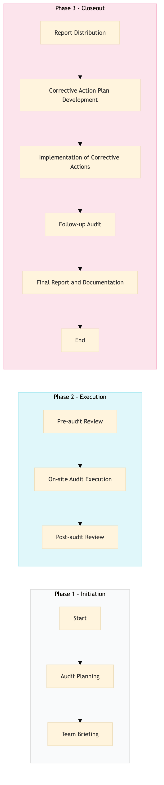

| Role | Steps |
|---|---|
| Quality Assurance Manager | 1.1 1.2 2.3 3.1 3.2 3.5 |
| Executive Chef | 2.1 3.2 3.3 |
| Quality Assurance Inspector | 2.2 3.4 |
| Step | Name | Role | System | Input | Output | KPI | Dec? | Exc? | Pain Point / Risk |
|---|---|---|---|---|---|---|---|---|---|
| 1.1 | Audit Planning | Quality Assurance Manager | Oracle OPERA Cloud | Audit checklist template | Customized audit plan | Completion within 2 hours | N | Y | Ensuring all critical areas are covered in the customized plan. |
| 1.2 | Team Briefing | Quality Assurance Manager | Microsoft Teams | Customized audit plan | Briefed team members | Less than 30 minutes | N | Y | Effective communication and understanding of the audit scope. |
| 2.1 | Pre-audit Review | Executive Chef | Oracle MICROS Simphony | Current food safety policies and procedures | Pre-audit review report | Less than 1 hour | N | Y | Ensuring all policies are up-to-date and relevant. |
| 2.2 | On-site Audit Execution | Quality Assurance Inspector | Oracle OPERA Cloud, Knowcross HotSOS | Customized audit plan, pre-audit review report | Audit findings and observations | Completion within 4 hours | Y | Y | Handling unexpected issues during the audit. |
| 2.3 | Post-audit Review | Quality Assurance Manager | Microsoft Teams, Oracle OPERA Cloud | Audit findings and observations | Final audit report with recommendations | Less than 2 hours | N | Y | Summarizing findings and identifying corrective actions. |
| 3.1 | Report Distribution | Quality Assurance Manager | Oracle OPERA Cloud, Microsoft Teams | Final audit report with recommendations | Distributed to relevant stakeholders | Less than 30 minutes | N | Y | Ensuring all stakeholders receive the report in a timely manner. |
| 3.2 | Corrective Action Plan Development | Executive Chef, Quality Assurance Manager | Oracle OPERA Cloud, Microsoft Teams | Final audit report with recommendations | Corrective action plan | Completion within 1 day | Y | Y | Developing actionable plans to address identified issues. |
| 3.3 | Implementation of Corrective Actions | Executive Chef, Food Safety Officer | Oracle MICROS Simphony, Oracle OPERA Cloud | Corrective action plan | Implemented corrective actions | Completion within 1 week | Y | Y | Ensuring all corrective actions are effectively implemented. |
| 3.4 | Follow-up Audit | Quality Assurance Inspector | Oracle OPERA Cloud, Knowcross HotSOS | Corrective action plan | Follow-up audit report | Completion within 2 weeks | N | Y | Validating that corrective actions have been successfully implemented. |
| 3.5 | Final Report and Documentation | Quality Assurance Manager | Oracle OPERA Cloud, Microsoft Teams | Follow-up audit report | Final documentation of the entire audit process | Completion within 1 day | N | Y | Comprehensive documentation to maintain compliance records. |
A structured process document for conducting a Food Safety & HACCP Audit at a Marriott full-service hotel.